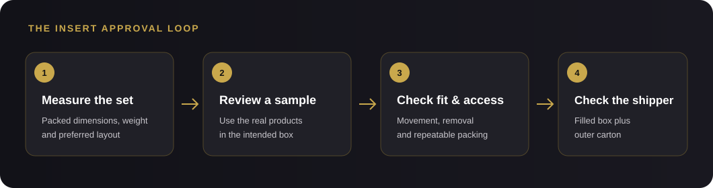

How to Choose a Custom Box Insert for a Product Kit
A practical guide to fitting every item, planning a clean presentation and approving the sample before production.
Short answer: design a custom box insert around the products as they will actually be packed, then check the layout in a physical sample. The insert should keep each item in its intended position and let the customer remove it without a struggle. For shipping, evaluate the filled presentation box inside its outer shipper too; an insert is only one part of that system.

What should a custom box insert do?
First decide the job the insert must do. It may separate several products, hold a bottle upright, keep a label facing forward, create a presentation when the lid opens, or make a set easier to pack. One insert can serve several purposes, but the priorities should be clear before a supplier develops the cavities.
For a multi-item kit, sketch the arrangement with every item shown in its packed condition. Note which side faces up, where accessories or cards sit, and which parts must not press against a pump, cap, glass edge or printed label.
Start with the complete packed set
Measure the products as they will go into the box, including caps, pumps, protective sleeves and any retail carton. Record each item’s length, width, height and weight. If a product can vary between batches, tell the supplier and agree how much clearance the sample should allow.
Then confirm the finished box’s inside dimensions and how the set should be arranged. A tray that looks right in a drawing may need more room for a finger grip, a ribbon pull, a booklet or a product that is awkward to lift. Keep the approved layout drawing or sample photos with the final specification.
Which insert format should you compare?
The best option depends on the product shape, weight, contact surfaces and presentation you want. Compare a few formats against the same packed set instead of choosing from a material name alone.
| Format | Useful when | Check on the sample |
|---|---|---|
| Paperboard tray or divider | You need a defined layout for several lighter pieces or compartments inside one box. | Check that folds stay square, cavities match the packed products and the tray sits correctly under the lid. |
| Die-cut EVA or foam insert | Separate shaped cavities and a close-fitting presentation are priorities. | Check the cut-out size, thickness, surface contact and whether each item can be lifted out comfortably. |
| Loose fill, such as wood wool | You want a softer, more flexible arrangement for products that do not need individual slots. | Check how consistently the set can be packed and whether items keep their positions after the box is closed and turned. |
These are starting points, not automatic performance ratings. Crown Win’s product examples show a multi-cavity tray, a die-cut EVA insert and a wood-wool presentation. A supplier should confirm material availability and suitability for the specific order.
Check four things on a physical sample
- Product fit: each item sits in its planned position without forcing the closure or pressing on a fragile or functional part.
- Movement: close the box and gently turn it in the orientations it may encounter. Look for sliding, tipping or contact that could mark the product.
- Access: try loading and removing every item. Finger gaps, lift tabs and the order of removal can matter as much as a snug cavity.
- Repeatable packing: have another person pack the set from the same instructions. The products should end up in the intended positions without guesswork.
Use the products that will be sold in the actual sample. A substitute bottle or an empty box can hide fit problems that appear when the real weight, cap or label is present.
Validate the filled box inside its shipper
A presentation insert and a shipping pack solve different problems. Review the closed retail box inside the outer shipping carton with the cushioning, orientation and packing method planned for the order. If products are heavy, glass or otherwise fragile, agree what transit checks are appropriate for the route and sales channel before approving production.
After the sample is approved, freeze the details that affect fit: product reference, box inside dimensions, insert material and thickness, cavity layout, and any agreed clearance or lift feature. If the product or finish changes, ask whether a new sample review is needed.
Material signals and lead times can change
Raw-material movements are local and grade-specific. A trade report published on October 11, 2026 described selected Chinese white paperboard price increases of RMB 200 per tonne announced for October 1, alongside changing supply and demand conditions. That is a China market signal for certain paperboard grades, not a global price forecast or the price of a finished custom box. Ask which board grade is quoted, how long the quote is valid and whether substitutions require your approval. Read the October paper-market report.
Production timing also depends on the confirmed structure, material, print and finish choices, quantity, sampling route and the factory schedule. Ask the supplier to separate sample timing, bulk production time counted from sample approval, packing readiness and transit estimate. Reconfirm the schedule if the insert or artwork changes, and leave room for sample review before a seasonal launch.
What should you send for an insert quote?
- A list of every item in the kit, with packed dimensions and weight.
- A photo or sketch showing the preferred layout, orientation and label-facing direction.
- The box style and internal dimensions, or a reference product if those are still open.
- The insert format or material you want to compare, plus any contact or finish requirements.
- Your quantity by design, destination, target delivery date and sample requirements.
- Any shipping carton or transit test requirements that affect how the filled box will be packed.
This insert brief complements the broader packaging brief checklist. For a quote covering the complete box, see the factors that shape a custom cosmetic box quote.
Frequently asked questions
Does a custom insert prevent shipping damage?
An insert can position or separate items inside the presentation box. It does not by itself confirm that the complete parcel is suitable for shipping. Check the filled presentation box, outer carton and any cushioning together against the route and handling the parcel will face.
Can one insert hold several product sizes?
It can, if each cavity and the shared layout are designed around the actual products. If sizes or packaging change between versions, confirm the fit for each version and ask whether separate inserts are needed.
Should I choose the insert material before the box structure?
Develop them together. The insert uses part of the box’s internal space and can affect the finished depth, opening, product visibility and packing method. Agree the layout and sample before locking the full specification.
When should I approve the production sample?
Approve it only after checking the actual products in the intended box, including fit, movement, access and the agreed presentation. Confirm any shipping validation separately before releasing the production specification.
Let’s develop your packaging.
Send product dimensions, quantity, preferred layout and delivery requirements to start a specification-based enquiry.
→ Request a Custom Quote